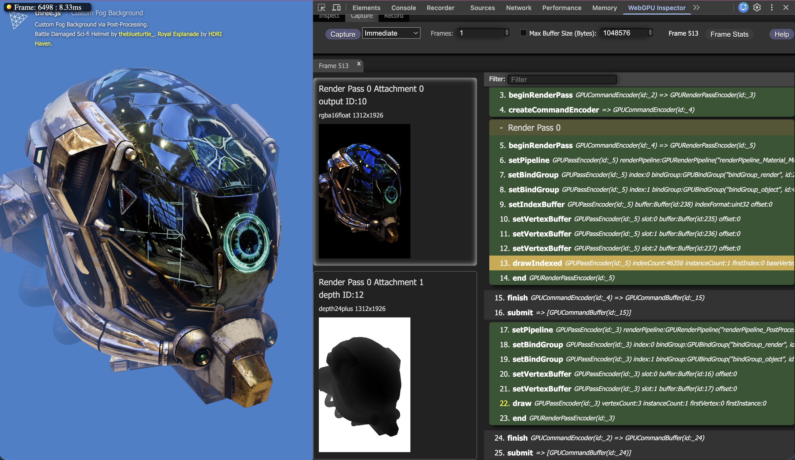

Aquí tienes algunos consejos sobre cómo depurar WebGPU y manejar errores.
La mayoría de los navegadores tienen una consola de JavaScript. Manténla abierta. WebGPU generalmente imprimirá los errores allí.
Puedes configurar un evento para capturar errores de WebGPU que no hayan sido capturados y luego registrarlos tú mismo. Por ejemplo:
const device = await adapter.requestDevice();
device.addEventListener('uncapturederror', event => alert(event.error.message));
Personalmente, no suelo usar alert, pero puedes registrar el mensaje en la consola, ponerlo en
un elemento de la página o hacerlo visible de alguna otra forma. Encuentro esto útil porque a menudo olvido
el consejo anterior de abrir la consola de JavaScript y entonces no veo los errores. 😅
Los errores que WebGPU emite por sí mismo van a la consola de JavaScript, pero los errores que tú capturas van a donde tú les indiques.
Los errores en WebGPU se informan de forma asíncrona. Esto es para mantener WebGPU rápido y eficiente. Pero significa que a veces podrías no recibir un error en el momento en que lo esperas o incluso no recibirlo en absoluto, a menos que ayudes a WebGPU.
Aquí tienes un código que usa el consejo anterior, añadiendo un evento para mostrar errores no capturados. Luego compila un módulo de shader que debería generar un error.
async function main() {
const adapter = await navigator.gpu?.requestAdapter();
const device = await adapter?.requestDevice();
device.addEventListener('uncapturederror', event => {
log(event.error.message);
});
device.createShaderModule({
code: /* wgsl */ `
este shader no compilará
`,
});
log('--hecho--');
}
En el ejemplo en vivo a continuación, al menos en Chrome 129, probablemente no recibirás un error.
La razón es que, en este caso, Chrome en WebGPU no procesa ciertos
errores hasta que llamas a ciertas funciones. Una de esas funciones es
submit.
async function main() {
const adapter = await navigator.gpu?.requestAdapter();
const device = await adapter?.requestDevice();
device.addEventListener('uncapturederror', event => {
log(event.error.message);
});
device.createShaderModule({
code: /* wgsl */ `
este shader no compilará
`,
});
+ // "bombear" WebGPU
+ device.queue.submit([]);
log('--hecho--');
}
Ahora debería mostrarse el error.
Este problema rara vez surge porque si nunca llamas a submit, realmente
aún no estás usando WebGPU. Pero puede aparecer en situaciones especiales, como
cuando intentas crear un ejemplo mínimo, completo y verificable para una
pregunta de soporte técnico o un informe de error. O si estás recorriendo el
código paso a paso y pasas una línea que sabes que debería causar un error y, sin embargo,
no ha aparecido ningún error todavía.
Nota: Si no quieres que el error también vaya a la consola de JavaScript,
puedes llamar a event.preventDefault().
Arriba mostramos un mensaje para “errores no capturados”, lo que implica que existe
algo llamado “error capturado”. Para capturar un error, hay un par
de funciones: device.pushErrorScope y device.popErrorScope.
Haces un “push” a un ámbito de error (error scope). Envías comandos y luego haces un “pop” al ámbito de error para ver si hubo algún error entre el momento en que hiciste el push y el momento en que hiciste el pop.
Ejemplo:
const adapter = await navigator.gpu?.requestAdapter();
const device = await adapter?.requestDevice();
device.addEventListener('uncapturederror', event => {
* log('error no capturado:', event.error.message);
});
+ device.pushErrorScope('validation');
device.createShaderModule({
code: /* wgsl */ `
este shader no compilará
`,
});
+ const error = await device.popErrorScope();
+ if (error) {
+ log('error capturado:', error.message);
+ }
+ device.createShaderModule({
+ code: /* wgsl */ `
+ este shader tampoco compilará
+ `,
+ });
device.queue.submit([]);
log('--hecho--');
device.pushErrorScope acepta uno de tres filtros:
'validation' (validación)
Errores relacionados con el uso incorrecto de la API.
'out-of-memory' (memoria insuficiente)
Errores relacionados con el intento de asignar demasiada memoria.
'internal' (interno)
Errores en los que no hiciste nada mal pero el controlador (driver) se quejó. Por ejemplo, esto podría suceder si tu shader es demasiado complejo.
popErrorScope devuelve una promesa con un error o null si no hubo error.
Arriba usamos await para esperar a la promesa, pero eso detiene nuestro programa. Es
probablemente más común usar then, como en:
device.pushErrorScope('validation');
device.createShaderModule({
code: /* wgsl */ `
este shader no compilará
`,
});
+ device.popErrorScope().then(error => {
+ if (error) {
+ log('error capturado:', error.message);
+ }
+ });
De esta manera nuestro programa no se pausa esperando a que la GPU nos responda sobre si hubo o no un error.
Algunos errores en WebGPU se comprueban cuando llamas a una función. Otros se comprueban más tarde. WebGPU especifica líneas de tiempo (timelines). Dos de ellas son la “línea de tiempo del contenido” (content timeline) y la “línea de tiempo del dispositivo” (device timeline). La “línea de tiempo del contenido” es la misma línea de tiempo que el propio JavaScript. La línea de tiempo del dispositivo es independiente y generalmente se ejecuta en un proceso separado. Incluso otros errores son comprobados por las propias reglas de JavaScript.
Ejemplo de un error de JavaScript: Pasar el tipo incorrecto
device.queue.writeBuffer(someTexture, ...);
El código anterior obtendría inmediatamente un error porque el primer argumento
de writeBuffer debe ser un GPUBuffer, algo que el propio JavaScript impone.
Ejemplo de un error de la “línea de tiempo del contenido”
device.createTexture({
size: [],
format: 'rgba8unorm',
usage: GPUTextureUsage.TEXTURE_BINDING,
});
size, tal como se proporciona arriba, es un error; debe tener al menos 1 elemento.
Ejemplo de un error de dispositivo
Los ejemplos al principio de la página son errores de dispositivo. Los errores de dispositivo
son los que procesan pushErrorScope, popErrorScope y los eventos de error no capturados.
El lugar donde ocurren los errores se detalla en la especificación, pero es importante saber que los errores de JavaScript y los errores de la línea de tiempo del contenido ocurren inmediatamente y lanzan una excepción, mientras que los errores de la línea de tiempo del dispositivo ocurren de forma asíncrona.
Si obtienes un error al compilar un módulo de shader, puedes solicitar información más
detallada llamando a getCompilationInfo.
Ejemplo:
device.pushErrorScope('validation');
const code = `
// Esta función
// llama a una función
// que no
// existe.
fn foo() -> vec3f {
return someFunction(1, 2);
}
`;
const module = device.createShaderModule({ code });
device.popErrorScope().then(async error => {
if (error) {
const info = await module.getCompilationInfo();
// Dividir el código en líneas
const lines = code.split('\n');
// Ordenar los mensajes por número de línea en orden inverso
// para que, a medida que insertamos los mensajes, no afecten
// a los números de línea.
const msgs = [...info.messages].sort((a, b) => b.lineNum - a.lineNum);
// Insertar los mensajes de error entre líneas
for (const msg of msgs) {
lines.splice(msg.lineNum, 0,
`${''.padEnd(msg.linePos - 1)}${''.padEnd(msg.length, '^')}`,
msg.message,
);
}
log(lines.join('\n'));
}
});
El código anterior intercala eficazmente cualquier mensaje de error en el código completo del shader.
getCompilationInfo devuelve un objeto que contiene un array de
GPUCompilationMessages, cada uno de los cuales tiene los siguientes campos:
message: un mensaje de error en forma de string.type: 'error', 'warning' (advertencia) o 'info' (información).lineNum: el número de la línea del error, basado en 1.linePos: la posición en la línea del error, basada en 1.offset: la posición en el string del error, basada en 0.
(esta es efectivamente la misma información que linePos y lineNum).length: la longitud a resaltar.La WebGPU-Dev-Extension proporciona características para ayudar a depurar.
Algunas cosas que puede hacer:
Mostrar un seguimiento de la pila (stack trace) de dónde ocurrieron los errores.
Como mostramos arriba, los errores en WebGPU ocurren de forma asíncrona. En el
primer ejemplo usamos el evento uncapturederror para ver que
obtuvimos un error de WebGPU, pero no había información sobre en qué parte de JavaScript
ocurrió ese error.
La webgpu-dev-extension proporciona esta información intentando añadir llamadas
a pushErrorScope y popErrorScope alrededor de todas las funciones de WebGPU
que generan errores. Internamente, crea un objeto Error que contiene un seguimiento de la pila.
Si obtiene un error, puede imprimir ese objeto Error y verás la pila de errores de dónde se
generó originalmente el error.
Mostrar errores para los codificadores de comandos (command encoders)
En WebGPU, los codificadores de comandos como GPUCommandEncoder, GPURenderPassEncoder,
GPUComputePassEncoder y GPURenderBundleEncoder no
generan errores en la línea de tiempo del dispositivo. En su lugar, los errores
se guardan hasta que llamas a encoder.finish().
Por ejemplo:
const encoder = device.createCommandEncoder(); const pass = encoder.beginRenderPass(renderPassDesc); pass.setPipeline(somePipeline); pass.setBindGroup(0, someBindGroupIncompatibleWithSomePipeline); // ¡uy! pass.setVertexBuffer(0, positionBuffer); pass.setVertexBuffer(1, normalBuffer); pass.setIndexBuffer(indexBuffer, 'uint16'); pass.drawIndexed(4); pass.end(); const cb = encoder.finish(); // El error anterior se genera aquí
El problema aquí es que, en el mejor de los casos, obtendrás un mensaje de error diciendo que el bind group vinculado al grupo 0 es incompatible con el pipeline, pero no sabrás en qué línea ocurrió el error. En un ejemplo pequeño como este debería ser bastante obvio, pero en una aplicación grande puede ser difícil rastrear qué línea específica causó el error.
La webgpu-dev-extension puede intentar lanzar un error en la línea que lo causó.
Mostrar errores de WGSL intercalados con el código fuente completo del shader
Al igual que el ejemplo anterior, la webgpu-dev-extension tiene una opción para mostrar los errores intercalados con el código WGSL original, en lugar de solo un mensaje de error escueto (el comportamiento por defecto).
El WebGPU-Inspector intentará capturar todos tus comandos de WebGPU y te permitirá inspeccionar buffers, texturas, llamadas y, en general, tratar de ver qué está pasando en tu código de WebGPU.

Lleva tu shader a un estado funcional eliminando todo lo posible. Una vez que funcione, añade cosas de nuevo poco a poco.
Para los pases de renderizado (render passes), lo primero que suelo hacer es mostrar un color sólido.
Aquí tienes el último shader del artículo sobre focos (spot lights).
@fragment fn fs(vsOut: VSOutput) -> @location(0) vec4f {
// Debido a que vsOut.normal es una variable inter-stage
// está interpolada, por lo que no será un vector unitario.
// Normalizarla la convertirá de nuevo en un vector unitario
let normal = normalize(vsOut.normal);
let surfaceToLightDirection = normalize(vsOut.surfaceToLight);
let surfaceToViewDirection = normalize(vsOut.surfaceToView);
let halfVector = normalize(
surfaceToLightDirection + surfaceToViewDirection);
let dotFromDirection = dot(surfaceToLightDirection, -uni.lightDirection);
let inLight = smoothstep(uni.outerLimit, uni.innerLimit, dotFromDirection);
// Calcular la luz tomando el producto escalar
// de la normal con la dirección hacia la luz
let light = inLight * dot(normal, surfaceToLightDirection);
var specular = dot(normal, halfVector);
specular = inLight * select(
0.0, // valor si la condición es falsa
pow(specular, uni.shininess), // valor si la condición es verdadera
specular > 0.0); // condición
// Multipliquemos solo la porción de color (no el alfa)
// por la luz
let color = uni.color.rgb * light + specular;
return vec4f(color, uni.color.a);
}
Se supone que el ejemplo renderiza una F verde con una pequeña porción iluminada por un foco. Aquí hay una versión con un error (bug). Vamos a depurarlo.
Lo ejecutamos y no apareció nada en la pantalla, y no hubo errores de WebGPU. Lo primero que podría hacer es cambiarlo para que devuelva un rojo sólido:
let color = uni.color.rgb * light + specular; - return vec4f(color, uni.color.a); + //return vec4f(color, uni.color.a); + return vec4f(1, 0, 0, 1); // rojo sólido
Si veo una F roja, entonces sé que debo empezar a buscar en el fragment shader (shader de fragmentos) ya que claramente una parte suficiente del vertex shader (shader de vértices) era correcta para dibujar los triángulos que forman la F. Si no veo una F roja, entonces debería empezar a buscar en el vertex shader.
Probándolo:
Vemos una F roja. Bien, intentemos visualizar las normales. Para hacerlo, cambia el final del fragment shader a:
let color = uni.color.rgb * light + specular; //return vec4f(color, uni.color.a); - return vec4f(1, 0, 0, 1); // rojo sólido + //return vec4f(1, 0, 0, 1); // rojo sólido + return vec4f(vsOut.normal * 0.5 + 0.5, 1); // normal
Las normales van de -1.0 a +1.0 pero los colores van de 0.0 a 1.0, así que multiplicando por 0.5 y sumando 0.5 convertimos las normales en algo que se puede visualizar con colores.
Probando eso:
Mmmm, eso no está bien. Parece sospechosamente que todas las normales son 0,0,0.
Claramente algo va mal con las normales en el fragment shader. Esas normales
vienen del vertex shader después de haber sido multiplicadas por normalMatrix. Intentemos
pasar las normales directamente, sin multiplicarlas por normalMatrix. Si
aparece la F, entonces sabremos que el error está en normalMatrix. Si la F no aparece,
entonces el error está en los datos suministrados al vertex shader.
// Orientar las normales y pasarlas al fragment shader - vsOut.normal = uni.normalMatrix * vert.normal; + //vsOut.normal = uni.normalMatrix * vert.normal; + vsOut.normal = vert.normal;
Ejecutando eso:
Eso ya se parece más a lo que buscamos. Así que aparentemente algo va mal con
normalMatrix.
Revisando el código, estaba comentada, lo que dejaba la matriz con todos ceros. Alguien debió de estar comprobando algo y olvidó descomentarla. 😅
// Invertirla y trasponerla en el valor worldInverseTranspose - //mat3.fromMat4(mat4.transpose(mat4.inverse(world)), normalMatrixValue); + mat3.fromMat4(mat4.transpose(mat4.inverse(world)), normalMatrixValue);
Vamos a descomentarla. Luego volvamos a poner el vertex shader como estaba:
// Orientar las normales y pasarlas al fragment shader - //vsOut.normal = uni.normalMatrix * vert.normal; - vsOut.normal = vert.normal; + vsOut.normal = uni.normalMatrix * vert.normal;
Eso nos da:
Si giras la F verás que los colores cambian, lo que indica que las normales
están siendo reorientadas por normalMatrix. Compara eso con el anterior,
donde los colores no cambian al girar.
Con eso finalmente podemos restaurar el fragment shader:
let color = uni.color.rgb * light + specular; - //return vec4f(color, uni.color.a); - //return vec4f(1, 0, 0, 1); // rojo sólido - return vec4f(vsOut.normal * 0.5 + 0.5, 1); // normal + return vec4f(color, uni.color.a);
Y ya funciona como debería.
Encontrar formas de visualizar tus datos es una buena manera de comprobarlos. Por ejemplo, para comprobar las coordenadas de textura, podrías hacer algo como:
return vec4f(fract(vsOut.texcoord), 0, 1);
Las coordenadas de textura suelen ir de 0.0 a 1.0, pero si estás repitiendo
la textura podrían ser mayores, por lo que fract se encarga de eso.
Para darte una idea de cómo se ven las coordenadas de textura, aquí tienes algunos objetos con sus coordenadas de textura visualizadas.
Las coordenadas de textura suelen ser suaves sobre una superficie.
Aquí tienes las mismas coordenadas de textura visualizadas con un error (bug).
Ya no son suaves, por lo que algo está probablemente mal.
Siguiendo los mismos procedimientos que arriba concluiríamos que los datos que llegan al
vertex shader deben estar mal. Y, en efecto, este ejemplo está subiendo los
datos de los vértices como valores float32x3 pero erróneamente se especificaron como float16x2
en el descriptor del render pipeline.